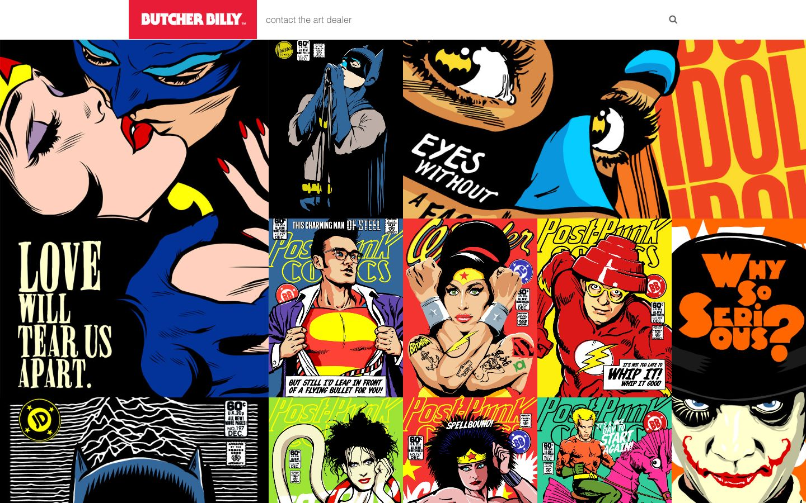

References / Website / 132
Butcher Billy website
An illustrator’s portfolio page: an edge-to-edge grid of pop-art comic covers and panels, many of them mock superhero covers titled “Post-Punk Comics”.
- Source
- Butcher Billy: Selected Cuts
- Creator
- Butcher Billy
- Style
- Pop art (agent-proposed, not yet reviewed by a person)
- Moods
- Loud, ironic, graphic
- Evidence
- Captured with
tools/capture.mjs(headless Chrome, 1440 × 900) on 28 September 2026 and inspected. Nothing covers the page. - Reviewed
- Rights
- Third-party work, stored with credit for commentary. License: unverified. Rights policy
Observed
- A white header bar holds a red block with the white logotype “BUTCHER BILLY” and a gray link “contact the art dealer”.
- The rest of the viewport is a gapless grid of square and double-width tiles, each an artwork.
- The large tile at left shows a kiss between two masked figures in flat blue, red, yellow, and skin tone with black outlines, and the words “LOVE WILL TEAR US APART.” in cream condensed capitals.
- Several tiles copy 1960s comic covers, with a price box (“60¢”), an issue number, a title band such as “Post-Punk Comics”, and a caption box at the foot.
- Other tiles use huge outlined lettering, such as “WHY SO SERIOUS?” in orange on black and “IDOL” in red on yellow.
- Colors are flat. There are no gradients in the artworks shown.
Why it belongs
The artworks follow the romance and superhero branches of the idiom closely, with Lichtenstein-like close-ups and lettering. The page itself is only a grid, so it shows the Warhol layout of repeated units more than any interface device.
The extractor sees almost none of this: the images hold 87% of the page, CSS hues measure 2, and there are no CSS borders or patterns.
Borrow
Tile comic panels edge to edge with no gutters, and mix single and double-width tiles.
Use a small solid red block for the logotype and let the images carry the color.
Measured
Machine-extracted by tools/extract-traits.js on . Full measurement.
- Type families
- Maven Pro (100%)
- Type scale ratio
- 1.23
- Median radius
- 0 px
- Mean chroma
- 0.06
- Palette
- #ffffff 88%
- #eeee22 4%
- #28d4ff 4%
- #000000 3%
- #686868 1%
- #585858 0%
- #e91d37 0%

